歯がしみる・歯が痛い～むし歯・根管治療～
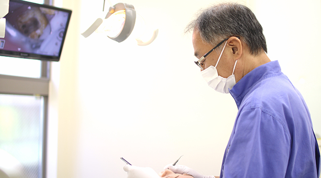
千歳船橋の歯医者「中村歯科医院」では、むし歯の治療に多くの実績があります。院長の確かな技術と蓄積された経験によって、患者様の症状に合わせて適切な治療法をご提案いたします。千歳船橋駅から徒歩3分と通いやすい立地にあり、土曜日も診療していますので、お口まわりでお悩みの方は一度ご来院ください。
痛くなってからでは遅いむし歯治療
むし歯の初期段階では自覚症状が少なく、「歯がしみる……」「歯が痛い……」といった症状が出た場合は、すでにむし歯が進行している可能性があります。むし歯は進行するほど複雑な治療が必要になるため、早い段階で発見することが大切です。神経まで達したむし歯に対しても、根管治療によって、なるべく抜歯せずに対処いたします。
むし歯の原因
むし歯の直接の原因となるものや、症状の進行を早める要因について紹介します。
| むし歯菌 | 糖分 |
|---|---|
| ミュータンス菌とも呼ばれるむし歯菌は、むし歯の直接的な原因となります。むし歯菌の出す酸によって歯の表面が溶かされ、神経に近づくにつれて痛みを感じるようになります。 | 食べ物に含まれる糖分は、むし歯菌が酸を作りだす元になります。間食が多く、甘いものが好きな方は要注意です。 |
| 歯質 | ブラッシングの習慣 |
| 歯の質には個人差があり、生まれながらにむし歯への抵抗力が低い方は、むし歯になるリスクが高まります。お子さんの乳歯や生えたばかりの永久歯もむし歯に弱いため注意しましょう。 | 日頃のブラッシング（歯磨き）の習慣の有無も、むし歯を進行させる原因の一つ。食後30分経つとむし歯菌の活動が活発化するため、正しいブラッシングの習慣が大切です。 |
むし歯の進行段階と治療法
むし歯は進行性の病気であり、進行段階によって症状や治療法が異なります。むし歯を放置していても自然に治癒することはないため、なるべく早い段階で治療するのが理想です。少しでも口腔内に違和感を覚えた場合は、当院までご相談ください。
| むし歯の進行段階 | 症状 | 治療法 |
|---|---|---|
| CO【むし歯の前兆】 |
むし歯菌の出す酸によって、歯の表面を覆っているエナメル質が溶け始めている状態です。白いチョークのように濁っている状態ですが、まだ歯に穴は開いていないため、自覚症状はほとんどありません。 | 正しいブラッシングにより食べカスを除去することで、むし歯菌の増殖を防ぎましょう。フッ素塗布によって歯の再石灰化を促し、むし歯菌から歯を守ります。適切な対応によって、むし歯が治ることがあります。 |
| C1【エナメル質のむし歯】 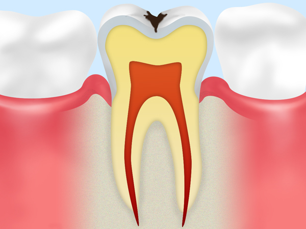 |
歯の表面のエナメル質がさらに溶けてしまい、黒ずんだ状態になります。歯の表面に穴が開いた状態となり、冷たいものでしみることがあります。 | むし歯になった部分の表面を削り、歯とほぼ同じ色味をしたレジン（歯科用プラスチック）を詰めて治療します。この段階ではむし歯の治療も比較的短く済みます。 |
| C2【象牙質のむし歯】 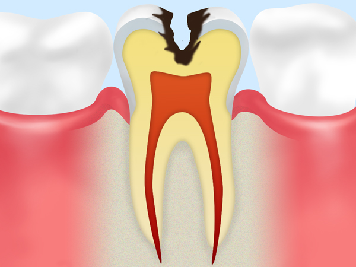 |
エナメル質の内側にある象牙質にまでむし歯が進行した状態です。冷たいものだけでなく甘いものもしみるようになり、痛みを自覚するようになります。 | むし歯になった象牙質の部分を削り、インレー（詰め物）を被せる治療を行います。 |
| C3【神経まで達したむし歯】 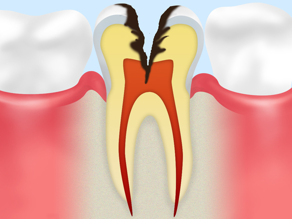 |
むし歯が歯の神経にまで達した場合、熱いものでもしみるようになります。普段から歯の痛みを感じるようになり、ズキズキとした痛みに襲われます。 | 歯の根の中にある管（根管）から神経を取り除き、根管内をきれいに洗浄します。殺菌して薬剤を詰め込んだ後、クラウン（被せ物）を被せる根管治療治療を行います。 |
| C4【歯根まで達したむし歯】 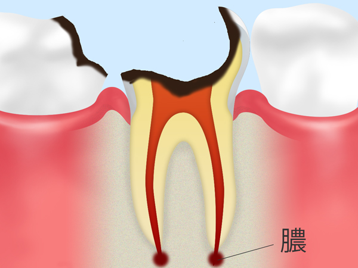 |
歯のほとんどが溶けてしまい、歯根までむし歯になった状態です。神経は死んでいるため痛みを感じなくなりますが、歯根に膿が溜まることで痛みが再発します。 | 歯根部分がむし歯になってしまった場合、抜歯が必要なケースも多くなります。歯を抜いた後に入れ歯やインプラント（人工歯根）によって歯の機能を補ったり、回復させたりします。 |
※表は左右にスクロールして確認することができます。
治療後は定期検診で口腔内の健康を維持する
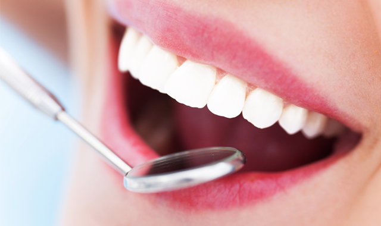
むし歯は口腔内のむし歯菌が原因で発症するため、治療しても再発するリスクが高い病気です。定期検診を受けてむし歯の予防に努めましょう。治療後の詰め物や被せ物、インプラント自体はむし歯にはなりませんが、経年によって歯との隙間ができ、そこから隣り合う天然の歯がむし歯になる場合があります。
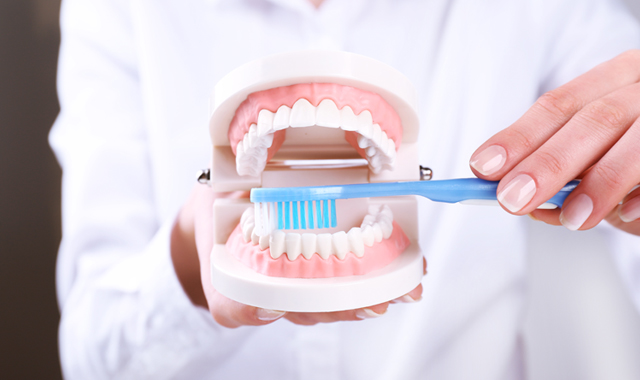
当院では患者様には定期的な歯科検診をおすすめしています。むし歯の再発を防ぐだけでなく、ブラッシングによる予防の重要性についてご説明いたします。年齢を重ねても自分の歯で食事を楽しむためにも、積極的に定期検診することをおすすめします。
できるだけ歯を残すための根管治療 への取り組み
根管治療とは？
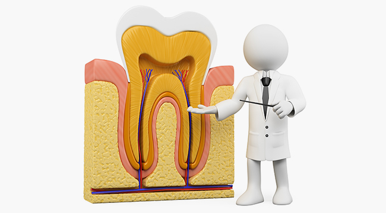
根管治療は歯の神経にまでむし歯が進行した状態(C3)に対して行われる歯科治療です。むし歯菌に蝕まれた歯の内部の神経や血管を除去し、内部を徹底的に清掃・消毒した後に薬剤を詰めて塞ぎます。抜歯が必要とされるケースでも、根管治療を行うことで歯を残せる可能性が高まるのです。
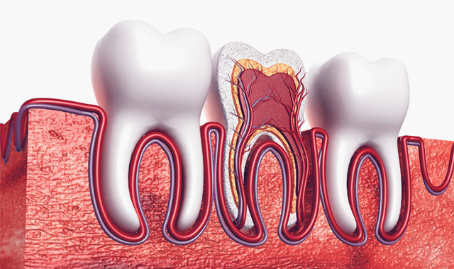
神経や血管の詰まった根管は細く複雑な形状をしているため、根管治療は歯科治療の中でも難しいとされています。治療によってはむし歯を再発させる原因にもなりかねないため、当院のように根管治療の実績が豊富な歯科医院で治療を受けてください。
根管治療の流れ
複雑な施術が必要な根管治療は、以下の流れで行われます。
| ステップ1 むし歯の除去 |
ステップ2 徹底した消毒 |
ステップ3 薬剤を充填 |
ステップ4 被せ物の装着 |
|---|---|---|---|
| 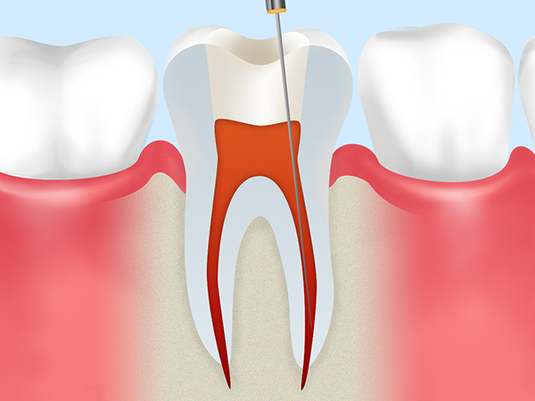 | 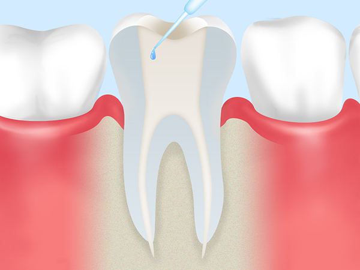 | 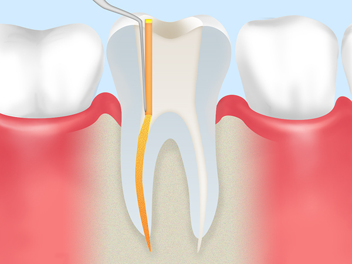 | 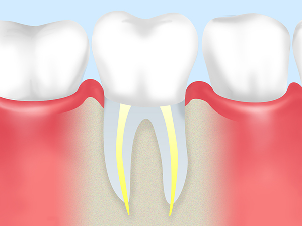 |
| 歯の内部からむし歯菌に汚染された部分を取り除き、根管内部の深さを測定します。 | 根管の内部を徹底的に清掃、消毒して無菌状態にします。 | 根管内部に薬剤を詰めてふたをします。 | 歯の内部に土台（コア）となる部分を埋め込み、セラミックなどの人工歯（クラウン）を被せます。 |
※表は左右にスクロールして確認することができます。
マイクロスコープによる根管治療
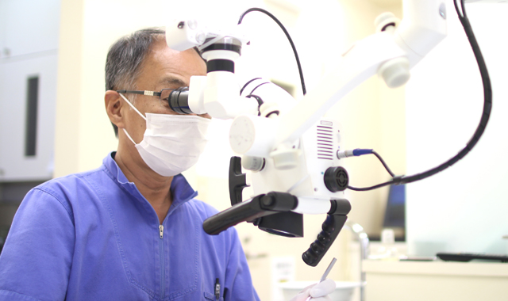
根管治療は歯の内部で施術を行うため肉眼で確認することができず、従来までは歯科医師が経験と見当で行っていました。しかし、マイクロスコープを用いた場合は肉眼の3～24倍もの拡大視野によって、目視しながらしっかりと治療することができるようになりました。歯の断面を撮影できるデジタルレントゲンと併用することにより、非常に高い精度の治療を可能としています。
当院の根管治療なら重症化したむし歯でもなるべく抜歯を避け、歯を残す選択肢をご提案いたします。根管治療に多くの実績がある当院をご利用ください。